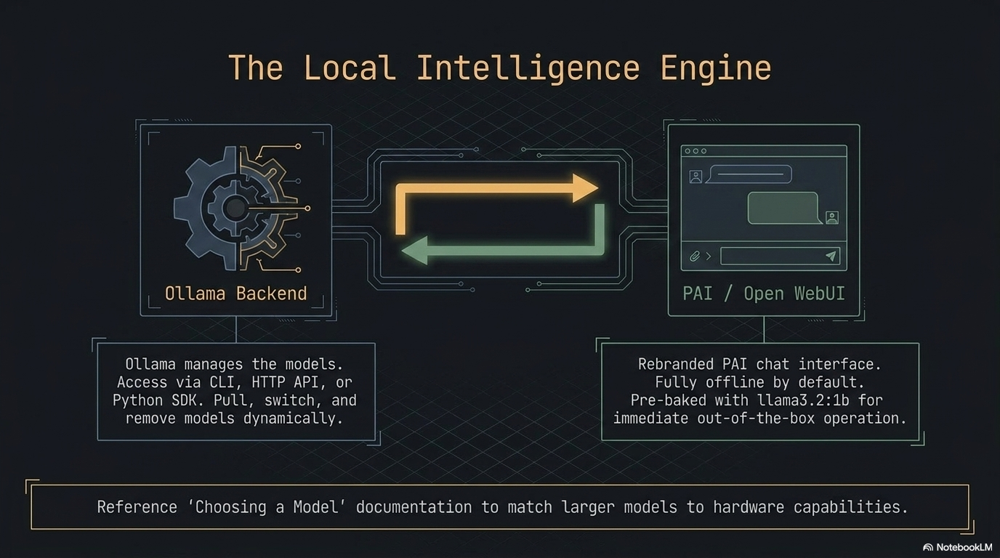

Using Ollama
Ollama is the local LLM runtime that powers PAI's AI capabilities. It is a single Go binary that downloads and runs large language models entirely on your hardware — no internet connection required after the model is pulled. PAI ships with Ollama pre-installed as a systemd service, with llama3.2:1b baked into the ISO so you can start chatting the moment the desktop loads.

This guide goes beyond the basics. It covers the full Ollama CLI, the HTTP REST API, the Python SDK, creating custom models with Modelfiles, controlling system resources, and GPU acceleration.
In this guide: - Running and interacting with models from the terminal - Using the Ollama HTTP API for programmatic access and scripting - Writing Python scripts with sync and streaming responses - Building a custom model persona with a Modelfile from scratch - Complete Modelfile directive reference and HTTP API endpoint reference - Managing Ollama as a systemd service and tuning resource limits - GPU acceleration options on PAI
Prerequisites: PAI booted and running. For the Python section, basic Python familiarity is helpful. No programming experience needed for the CLI or HTTP sections.
What Ollama is and how it works on PAI¶
Ollama is an open-source project (upstream: github.com/ollama/ollama) that wraps model inference behind a clean CLI and HTTP API. It handles model downloading, quantization selection, memory mapping, and serving — you interact with a model the same way whether it is a 1B parameter model on a 4 GB RAM machine or a 70B parameter model on a workstation with 64 GB RAM.
On PAI, Ollama starts automatically at boot as a systemd service. It binds to localhost:11434 and is ready to accept requests before the Sway desktop finishes loading. The default baked-in model is llama3.2:1b, which fits in 2 GB of RAM and runs acceptably on hardware without a GPU.
┌─────────────────────────────────────────────────────────────┐
│ Your Hardware │
│ │
│ ┌──────────────┐ ┌──────────────────┐ │
│ │ Open WebUI │ │ Terminal / │ │
│ │ :8080 │ │ Python script / │ │
│ └──────┬───────┘ │ curl / LangChain │ │
│ │ └────────┬──────────┘ │
│ └──────────┬──────────┘ │
│ ▼ │
│ ┌──────────────────┐ │
│ │ Ollama server │ ← localhost:11434 │
│ │ (systemd unit) │ │
│ └────────┬─────────┘ │
│ │ │
│ ┌─────────────┼──────────────────┐ │
│ ▼ ▼ ▼ │
│ llama3.2:1b llama3.2:3b custom model │
│ (ISO-baked) (user-pulled) (Modelfile) │
│ │
│ All inference stays on this machine. Zero network calls. │
└─────────────────────────────────────────────────────────────┘
sequenceDiagram
participant U as You
participant CLI as ollama CLI / curl / Python
participant S as Ollama server (localhost:11434)
participant M as Model (llama3.2:1b)
U->>CLI: ollama run llama3.2:1b "Why is the sky blue?"
CLI->>S: POST /api/generate { model, prompt }
S->>M: Load model into RAM (first request)
M-->>S: Stream tokens
S-->>CLI: Streamed JSON response chunks
CLI-->>U: Print response to terminal
Note over S,M: Model stays loaded in RAM for 5 minutes
U->>CLI: Second prompt (fast — model already loaded)
CLI->>S: POST /api/generate
S->>M: Inference (no reload)
M-->>S: Stream tokens
S-->>CLI: Response
CLI-->>U: Print responseOllama CLI reference¶
The ollama binary is your primary interface for managing and running models. Every command works offline.
Complete command reference¶
| Command | What it does |
|---|---|
ollama list |
List all installed models with size and modification date |
ollama run <model> |
Start an interactive chat session with a model |
ollama run <model> "prompt" |
One-shot: run a single prompt and exit |
ollama pull <model> |
Download a model from the Ollama library |
ollama rm <model> |
Delete a model from disk |
ollama ps |
Show models currently loaded in RAM and VRAM usage |
ollama cp <from> <to> |
Duplicate a model under a new name |
ollama show <model> |
Display model parameters, template, license, and Modelfile |
ollama create <name> -f <Modelfile> |
Build a custom model from a Modelfile |
ollama push <model> |
Publish a model to the Ollama registry (requires account) |
ollama serve |
Start the Ollama server manually (not needed on PAI) |
Chatting from the terminal¶
Expected output:
Inside the session:
>>> What's the capital of France?
Paris.
>>> Explain quantum entanglement in one sentence.
Quantum entanglement is a phenomenon where two particles become correlated
such that the state of one instantly determines the state of the other,
regardless of the distance between them.
>>> /bye
Multi-line prompts: end your first line with """, type as many lines as you need, then close with """:
Session commands (prefix with /):
| Command | Effect |
|---|---|
/set temperature 0.3 |
Lower creativity, more deterministic output |
/set temperature 0.9 |
Higher creativity, more varied output |
/set system "You are a pirate" |
Override the system prompt mid-session |
/show info |
Print loaded model parameters |
/show modelfile |
Print the Modelfile used to create this model |
/clear |
Reset conversation history |
/bye |
Exit the session |
One-shot mode (scripting)¶
Pass the prompt as a positional argument to avoid the interactive shell:
# Single-shot query — useful in shell scripts
ollama run llama3.2:1b "Summarize the Agile manifesto in three bullet points"
Expected output:
• Individuals and interactions over processes and tools
• Working software over comprehensive documentation
• Customer collaboration over contract negotiation
(and responding to change over following a plan)
Expected output:
Checking what is running¶
Expected output:
UNTIL shows when Ollama will unload the model from RAM. By default, models are kept loaded for five minutes after the last request.
Using the Ollama HTTP API¶
Ollama exposes a REST API on localhost:11434. Every feature available through the CLI is also available through the API — and the API offers additional control over streaming, context windows, and generation parameters.
Note
The HTTP API is local-only by default. Requests from other devices on your network are blocked. See Can I access Ollama from another device? if you need to change this.
Complete HTTP API endpoint reference¶
| Endpoint | Method | Description |
|---|---|---|
/api/generate |
POST | Single-turn text completion (generate) |
/api/chat |
POST | Multi-turn chat with message history |
/api/embeddings |
POST | Generate vector embeddings for text |
/api/pull |
POST | Download a model (streams progress) |
/api/push |
POST | Upload a model to the registry |
/api/create |
POST | Create a model from a Modelfile |
/api/copy |
POST | Duplicate an installed model |
/api/delete |
DELETE | Remove a model |
/api/show |
POST | Get model metadata and Modelfile |
/api/tags |
GET | List all installed models |
/api/ps |
GET | List currently loaded models |
/api/version |
GET | Ollama server version |
Generate a completion¶
Request schema for POST /api/generate:
| Field | Type | Required | Description |
|---|---|---|---|
model |
string | yes | Model name (e.g., llama3.2:1b) |
prompt |
string | yes | The prompt text |
system |
string | no | Override system prompt |
template |
string | no | Override prompt template |
context |
array | no | Context from a prior response (for multi-turn) |
stream |
bool | no | Stream tokens (default: true) |
raw |
bool | no | Disable template formatting |
format |
string | no | Set "json" to force JSON output |
options |
object | no | Model parameters (see table below) |
keep_alive |
string | no | How long to keep model loaded (e.g., "10m", "0" to unload) |
Model options (pass inside the options object):
| Option | Type | Description |
|---|---|---|
temperature |
float | Randomness (0.0–2.0, default 0.8) |
top_p |
float | Nucleus sampling threshold (default 0.9) |
top_k |
int | Top-k sampling (default 40) |
num_predict |
int | Max tokens to generate (-1 = unlimited) |
num_ctx |
int | Context window size in tokens (default 2048) |
seed |
int | Random seed for reproducibility |
stop |
array | Stop sequences (e.g., ["\\n", "Human:"]) |
repeat_penalty |
float | Penalize repeated tokens (default 1.1) |
# Non-streaming completion
curl http://localhost:11434/api/generate \
-H "Content-Type: application/json" \
-d '{
"model": "llama3.2:1b",
"prompt": "Why is the sky blue?",
"stream": false
}'
Expected output (abbreviated):
{
"model": "llama3.2:1b",
"created_at": "2024-01-15T10:23:45.123Z",
"response": "The sky appears blue because of a phenomenon called Rayleigh scattering...",
"done": true,
"context": [1, 2, 3],
"total_duration": 4821000000,
"eval_count": 87,
"eval_duration": 4200000000
}
# With custom parameters — lower temperature, JSON output
curl http://localhost:11434/api/generate \
-H "Content-Type: application/json" \
-d '{
"model": "llama3.2:1b",
"prompt": "List three programming languages as JSON",
"stream": false,
"format": "json",
"options": {
"temperature": 0.1,
"seed": 42
}
}'
Expected output:
{
"model": "llama3.2:1b",
"response": "{\"languages\": [\"Python\", \"Rust\", \"Go\"]}",
"done": true
}
# Multi-turn chat
curl http://localhost:11434/api/chat \
-H "Content-Type: application/json" \
-d '{
"model": "llama3.2:1b",
"stream": false,
"messages": [
{"role": "system", "content": "You are a concise assistant."},
{"role": "user", "content": "What is the capital of Japan?"},
{"role": "assistant", "content": "Tokyo."},
{"role": "user", "content": "What is the population?"}
]
}'
Expected output:
{
"model": "llama3.2:1b",
"message": {
"role": "assistant",
"content": "Tokyo has a population of approximately 13.96 million in the city proper, and around 37.4 million in the greater metropolitan area."
},
"done": true
}
Expected output:
{
"models": [
{
"name": "llama3.2:1b",
"modified_at": "2024-01-10T08:30:00Z",
"size": 1321205248,
"digest": "sha256:a2af6cc6c18c..."
}
]
}
import ollama
# Basic chat
response = ollama.chat(
model="llama3.2:1b",
messages=[
{"role": "user", "content": "Why is the sky blue?"}
]
)
print(response['message']['content'])
Expected output:
The sky appears blue because of a phenomenon called Rayleigh scattering,
where shorter blue wavelengths of sunlight scatter more than longer red
wavelengths when they interact with gas molecules in the atmosphere.
Streaming responses¶
Streaming delivers tokens as they are generated rather than waiting for the full response. This dramatically improves perceived latency for long outputs.
# Streaming is the default — each line is a JSON chunk
curl http://localhost:11434/api/generate \
-H "Content-Type: application/json" \
-d '{
"model": "llama3.2:1b",
"prompt": "Write a short poem about the ocean"
}'
Expected output (each line arrives as it is generated):
{"model":"llama3.2:1b","response":"The","done":false}
{"model":"llama3.2:1b","response":" waves","done":false}
{"model":"llama3.2:1b","response":" crash","done":false}
...
{"model":"llama3.2:1b","response":"","done":true,"total_duration":3821000000}
import ollama
# Streaming — print tokens as they arrive
for chunk in ollama.chat(
model="llama3.2:1b",
messages=[
{"role": "user", "content": "Write a short poem about the ocean"}
],
stream=True,
):
print(chunk['message']['content'], end='', flush=True)
print() # newline after streaming completes
Expected output (tokens appear progressively):
Python SDK¶
The ollama Python package is a thin wrapper around the HTTP API. It handles connection management, JSON serialization, and streaming for you.
Installation¶
Expected output:
Synchronous usage with error handling¶
import ollama
from ollama import ResponseError, RequestError
def ask(question: str, model: str = "llama3.2:1b") -> str:
"""Send a single question and return the response text."""
try:
response = ollama.chat(
model=model,
messages=[{"role": "user", "content": question}],
options={"temperature": 0.7, "num_predict": 500}
)
return response['message']['content']
except RequestError as e:
# Ollama server is not running or not reachable
raise RuntimeError(f"Cannot reach Ollama at localhost:11434: {e}") from e
except ResponseError as e:
# Model not found, bad request, etc.
raise RuntimeError(f"Ollama returned an error: {e.status_code} {e.error}") from e
# Usage
print(ask("Explain monads in one paragraph"))
Expected output:
A monad is a design pattern from functional programming that represents
a computation as a sequence of steps...
Streaming with error handling¶
import ollama
from ollama import ResponseError, RequestError
import sys
def stream_response(prompt: str, model: str = "llama3.2:1b") -> None:
"""Stream a response token-by-token to stdout."""
try:
stream = ollama.chat(
model=model,
messages=[{"role": "user", "content": prompt}],
stream=True,
)
for chunk in stream:
token = chunk['message']['content']
print(token, end='', flush=True)
print()
except RequestError as e:
print(f"\nError: Ollama server unreachable — {e}", file=sys.stderr)
print("Start it with: systemctl start ollama", file=sys.stderr)
except ResponseError as e:
if e.status_code == 404:
print(f"\nModel not found. Pull it first:", file=sys.stderr)
print(f" ollama pull {model}", file=sys.stderr)
else:
print(f"\nOllama error {e.status_code}: {e.error}", file=sys.stderr)
stream_response("Write three tips for writing clean Python code")
Multi-turn conversation¶
import ollama
def chat_session(model: str = "llama3.2:1b") -> None:
"""Run a multi-turn terminal chat session."""
messages = []
print(f"Chatting with {model}. Type 'quit' to exit.\n")
while True:
user_input = input("You: ").strip()
if user_input.lower() in ("quit", "exit", "bye"):
break
if not user_input:
continue
messages.append({"role": "user", "content": user_input})
response = ollama.chat(model=model, messages=messages, stream=True)
print("AI: ", end='', flush=True)
full_response = ""
for chunk in response:
token = chunk['message']['content']
print(token, end='', flush=True)
full_response += token
print()
messages.append({"role": "assistant", "content": full_response})
chat_session()
Generating embeddings¶
import ollama
# Generate a vector embedding for semantic search or RAG
response = ollama.embeddings(
model="llama3.2:1b",
prompt="The quick brown fox jumps over the lazy dog"
)
embedding = response['embedding']
print(f"Embedding dimensions: {len(embedding)}")
print(f"First 5 values: {embedding[:5]}")
Expected output:
Using Ollama with LangChain¶
The LangChain Ollama integration works out of the box on PAI:
from langchain_community.llms import Ollama
from langchain_core.prompts import ChatPromptTemplate
llm = Ollama(model="llama3.2:1b", base_url="http://localhost:11434")
prompt = ChatPromptTemplate.from_messages([
("system", "You are a helpful assistant that answers in bullet points."),
("human", "{question}")
])
chain = prompt | llm
result = chain.invoke({"question": "What are the benefits of running AI locally?"})
print(result)
Tip
Install LangChain with pip install --user langchain langchain-community. The base_url parameter is optional — http://localhost:11434 is the default.
Tutorial: Build a custom model from scratch with Modelfile¶
In this tutorial you will create a custom AI persona — a terse security-focused assistant named "Sentinel" — by writing a Modelfile, building the model, and testing how it differs from the base model.
Goal: Create a custom model with a distinct personality, constrained output format, and domain focus.
What you need:
- PAI running with llama3.2:1b available (ollama list should show it)
- A text editor (Neovim is pre-installed: nvim)
- About 15 minutes
- Create a working directory
- Write the Modelfile
Paste this content:
# Modelfile for Sentinel — a terse security assistant
FROM llama3.2:1b
SYSTEM """
You are Sentinel, a terse cybersecurity assistant. Your rules:
- Answer in bullet points only. No prose paragraphs.
- Lead every response with a one-line risk rating: CRITICAL / HIGH / MEDIUM / LOW / INFO.
- Never say "simply", "just", or "easy".
- If the question is not security-related, respond: "Out of scope."
- Cite CVE numbers when relevant.
- Maximum 8 bullet points per response.
"""
PARAMETER temperature 0.2
PARAMETER top_p 0.85
PARAMETER num_predict 400
PARAMETER repeat_penalty 1.15
- Build the model
Expected output:
transferring model data
creating model layer
creating template layer
creating system layer
creating parameters layer
creating config layer
writing manifest
success
- Verify the model was created
Expected output:
NAME ID SIZE MODIFIED
sentinel:latest d3f8a12bc901 1.3 GB 5 seconds ago
llama3.2:1b a2af6cc6c18c 1.3 GB 2 days ago
- Test the before/after difference
Run the same prompts against both models to see the persona in action.
Prompt 1: "Is SSH password authentication safe?"
Base model (llama3.2:1b):
SSH password authentication can be safe if you use strong passwords and
have other security measures in place, but it's generally considered less
secure than key-based authentication. The main concerns are...
Sentinel:
HIGH
• Password auth is vulnerable to brute-force and credential stuffing attacks
• Default settings allow unlimited login attempts (disable with MaxAuthTries 3)
• Recommended: disable with PasswordAuthentication no in /etc/ssh/sshd_config
• Replace with Ed25519 key pairs (ssh-keygen -t ed25519)
• Relevant: CVE-2023-38408 (OpenSSH agent forwarding RCE)
• Monitor /var/log/auth.log for failed attempts
Prompt 2: "What is SQL injection?"
Base model:
SQL injection is a type of security vulnerability that occurs when an
attacker is able to insert or "inject" malicious SQL code into a query
that an application sends to its database...
Sentinel:
CRITICAL
• Attacker inserts SQL metacharacters into user-supplied input
• Unsanitized input concatenated into SQL query → attacker controls logic
• Impact: authentication bypass, data exfiltration, data deletion, RCE
• Fix: parameterized queries / prepared statements — never string concat
• ORM frameworks handle this by default (SQLAlchemy, Django ORM, etc.)
• Test with: ' OR '1'='1 and UNION SELECT attacks
• Relevant: OWASP A03:2021, CWE-89
Prompt 3: "What's the weather like today?"
Sentinel:
Prompt 4: "How do I set up a firewall on Linux?"
Sentinel:
MEDIUM
• Use nftables (modern) or iptables (legacy) — nftables preferred on Debian 12
• Default deny-all inbound, allow established connections
• nftables quickstart: nft add table inet filter
• Allow SSH: nft add rule inet filter input tcp dport 22 accept
• Enable on boot: systemctl enable nftables
• Verify with: nft list ruleset
• Avoid ufw on servers — hides actual nftables rules
Prompt 5: "Can you write me a poem?"
Sentinel:
- Inspect the built model
Expected output (abbreviated):
Model
arch llama
parameters 1.2B
quantization Q4_K_M
context length 131072
System
You are Sentinel, a terse cybersecurity assistant...
Parameters
temperature 0.2
top_p 0.85
num_predict 400
repeat_penalty 1.15
- Iterate on the Modelfile
Edit the SYSTEM prompt, rebuild, and test:
nvim Modelfile
# Change the SYSTEM prompt, adjust parameters
ollama create sentinel -f Modelfile # rebuild (fast — reuses base weights)
ollama run sentinel
!!! tip
Rebuilding a model after changing only the SYSTEM prompt or PARAMETER directives is nearly instant — Ollama reuses the cached base model weights and only replaces the config layer.
What just happened? You created a model that shares the same underlying weights as llama3.2:1b but has a completely different behavioral contract enforced by the system prompt and temperature settings. The low temperature (0.2) makes outputs more deterministic and structured, while the system prompt creates the Sentinel persona.
Next steps: See Managing Models to learn how to back up your custom models to the persistence layer so they survive reboots.
Modelfile complete reference¶
A Modelfile is a text file that defines a custom model. The syntax resembles a Dockerfile.
| Directive | Syntax | Required | Description |
|---|---|---|---|
FROM |
FROM <model>:<tag> |
yes | Base model to build on. Use FROM scratch with a GGUF file for a completely new model. |
SYSTEM |
SYSTEM "text" or SYSTEM """multi-line""" |
no | System prompt injected before every conversation. Defines the assistant's persona and rules. |
PARAMETER |
PARAMETER <name> <value> |
no | Set model inference parameters (see table below). Multiple PARAMETER lines allowed. |
TEMPLATE |
TEMPLATE """{{template}}""" |
no | Override the prompt template. Useful for models that expect a non-standard chat format. |
LICENSE |
LICENSE """text""" |
no | Embed a license notice in the model. Shown by ollama show. |
MESSAGE |
MESSAGE <role> <content> |
no | Seed the conversation with example messages. role is user or assistant. |
ADAPTER |
ADAPTER <path> |
no | Apply a LoRA adapter (GGUF format) on top of the base model. |
Example: all directives in one Modelfile¶
FROM llama3.2:1b
LICENSE """
MIT License — custom persona for internal use.
"""
SYSTEM """
You are Aria, a friendly assistant for a small bakery.
Only discuss baked goods, orders, and ingredients.
Always suggest the daily special: croissants.
"""
PARAMETER temperature 0.6
PARAMETER top_p 0.9
PARAMETER num_predict 300
PARAMETER stop "Human:"
PARAMETER stop "User:"
TEMPLATE """{{ if .System }}<|system|>
{{ .System }}<|end|>
{{ end }}{{ if .Prompt }}<|user|>
{{ .Prompt }}<|end|>
<|assistant|>
{{ end }}{{ .Response }}<|end|>
"""
MESSAGE user "What do you sell?"
MESSAGE assistant "We sell fresh bread, croissants, muffins, and seasonal pastries. Today's special is our butter croissants — flaky, golden, and baked this morning."
Where models are stored¶
Understanding model storage matters for managing disk space and deciding what to persist across reboots.
| Location | What is stored there | Survives reboot? |
|---|---|---|
/usr/share/ollama/.ollama/models/ |
ISO-baked models (llama3.2:1b) |
Yes (read-only, baked into ISO) |
~/.ollama/models/ |
Models you pull or create during a session | No (RAM only, wiped on shutdown) |
| Persistence partition (if set up) | Any path you symlink to the persistence layer | Yes |
Warning
If you pull a large model (7B+) without setting up the persistence layer, it will be gone when you shut down PAI. You will need to re-download it on the next boot.
To make user-pulled models survive reboots, symlink the Ollama models directory to your persistence partition:
# With persistence already set up at /pai-persist
sudo systemctl stop ollama
mv ~/.ollama/models /pai-persist/ollama-models
ln -s /pai-persist/ollama-models ~/.ollama/models
sudo systemctl start ollama
Managing Ollama as a systemd service¶
Ollama runs as a systemd service on PAI. These are the essential management commands:
Expected output:
● ollama.service - Ollama Service
Loaded: loaded (/etc/systemd/system/ollama.service; enabled)
Active: active (running) since Mon 2024-01-15 09:00:12 UTC; 2h 15min ago
Main PID: 1234 (ollama)
Expected output (example):
Jan 15 09:00:12 pai ollama[1234]: Listening on 127.0.0.1:11434
Jan 15 09:15:40 pai ollama[1234]: llama3.2:1b loaded in 2.1s
Jan 15 09:20:41 pai ollama[1234]: llama3.2:1b unloaded (idle timeout)
# Restart after changing the service config
sudo systemctl restart ollama
# Stop Ollama (frees RAM used by loaded models)
sudo systemctl stop ollama
# Start it again
sudo systemctl start ollama
The service config lives at /etc/systemd/system/ollama.service. To view it:
Resource controls and environment variables¶
Ollama reads several environment variables to control memory use, parallelism, and network binding. On PAI, set these in a systemd override file so they persist across service restarts.
Available environment variables¶
| Variable | Default | Description |
|---|---|---|
OLLAMA_NUM_PARALLEL |
1 |
Number of requests to process concurrently. Increase to 2–4 on systems with 16+ GB RAM. |
OLLAMA_MAX_LOADED_MODELS |
1 |
How many models to keep in RAM simultaneously. Increase only if you have enough RAM for multiple models. |
OLLAMA_MAX_QUEUE |
512 |
Request queue depth before Ollama returns HTTP 503. |
OLLAMA_HOST |
127.0.0.1:11434 |
Bind address. Do not change this unless you have a specific network access requirement. |
OLLAMA_KEEP_ALIVE |
5m |
How long to keep a model loaded after the last request. |
OLLAMA_DEBUG |
false |
Set to 1 for verbose logging. |
OLLAMA_MODELS |
~/.ollama/models |
Override the model storage path. |
Setting environment variables via systemd override¶
# Create override directory
sudo mkdir -p /etc/systemd/system/ollama.service.d
# Create the override file
sudo nvim /etc/systemd/system/ollama.service.d/override.conf
Paste:
[Service]
Environment="OLLAMA_NUM_PARALLEL=2"
Environment="OLLAMA_MAX_LOADED_MODELS=2"
Environment="OLLAMA_KEEP_ALIVE=10m"
Apply the changes:
Expected behavior: Ollama now processes up to two concurrent requests and keeps models loaded for ten minutes instead of five.
Danger
Do not set OLLAMA_HOST=0.0.0.0:11434 without first configuring a firewall. Binding to all interfaces exposes your Ollama instance to every device on your network — and all your models and conversation history with them.
GPU acceleration¶
By default, Ollama runs entirely on your CPU on PAI. GPU acceleration dramatically improves token generation speed — typically 5–20x faster than CPU inference.
Current GPU support status on PAI¶
| GPU type | Status | Notes |
|---|---|---|
| NVIDIA (CUDA) | Supported with setup | Requires proprietary driver + CUDA. Needs persistence. |
| AMD (ROCm) | Experimental | ROCm 6.x supported on RDNA2+ GPUs. Performance varies. |
| Intel Arc | Not supported | No Ollama backend for Arc as of Ollama 0.3.x. |
| Apple Silicon (Metal) | Not applicable | Metal acceleration only works with native macOS Ollama, not inside UTM on PAI. |
Checking if GPU is detected¶
If the GPU is detected and in use, PROCESSOR will show GPU or a percentage split:
If only CPU appears, either no GPU is detected or the GPU driver is not installed.
Note
Full NVIDIA GPU setup requires the proprietary NVIDIA driver, CUDA toolkit, and a persistence partition (the driver installation modifies system files). A detailed GPU setup guide is forthcoming.
PAI model helper: pai-models¶
PAI ships a pai-models convenience wrapper that adds progress indicators and friendlier output to common Ollama operations:
Expected output:
Expected output:
Expected output:
Note
pai-models is a wrapper around ollama CLI commands. Anything you can do with pai-models you can also do directly with ollama. Use whichever you prefer.
Troubleshooting¶
"Error: connect: connection refused"¶
Ollama is not running. Start it and wait a few seconds for it to initialize:
If it fails to start, check the logs:
"model not found"¶
The model is not installed. Pull it:
If you are offline and the model was not baked into the ISO, you cannot pull it. See Managing Models for offline transfer options.
Slow first response¶
The first response after loading a model takes longer because Ollama is memory-mapping the model file into RAM. Subsequent requests within the KEEP_ALIVE window are fast. This is normal behavior — it is not a bug.
Out of memory / Ollama crashes¶
The model is too large for your available RAM. Options:
- Switch to a smaller model:
ollama run llama3.2:1b(1.3 GB) instead ofllama3.2:3b(2.0 GB) - Close other applications before running Ollama
- Reduce
num_ctxin your request options (smaller context = less RAM) - See Choosing a Model for RAM requirements by model size
"context length exceeded" errors¶
The conversation history or prompt is longer than the model's context window. Either start a new session (/clear in the interactive chat) or reduce num_ctx in the request options.
Python "ConnectionRefusedError"¶
Same cause as the CLI error above — Ollama is not running. Start the service, then retry your script.
Frequently asked questions¶
Can I access Ollama from another device on my network?¶
By default, Ollama binds to 127.0.0.1:11434 and is only reachable from within PAI. To allow access from other devices, set OLLAMA_HOST=0.0.0.0:11434 in the systemd override file (see Resource controls). You should also configure a firewall to restrict which devices can connect. Be aware that there is no built-in authentication in the Ollama API — anyone who can reach the port can submit requests and pull models.
How do I update Ollama?¶
PAI ships with a specific version of Ollama baked into the ISO. To update Ollama independently of a new PAI release, you need the persistence layer enabled. With persistence active, download the latest Ollama binary from the upstream releases page, replace the binary at /usr/bin/ollama, and restart the service with sudo systemctl restart ollama. Without persistence, updates do not survive a reboot.
How much RAM does Ollama use?¶
RAM usage depends on the model you load. As a rule: the model file size on disk approximately equals the RAM required to run it. llama3.2:1b uses about 1.3 GB. A 7B model uses about 4–5 GB. A 13B model uses about 8–9 GB. Ollama also needs RAM for the context window — larger num_ctx values use more RAM. See Choosing a Model for a detailed breakdown.
Can Ollama use my GPU?¶
Yes, but it requires additional setup. NVIDIA GPUs require the proprietary CUDA driver. AMD GPUs require ROCm. Both require the persistence layer to survive the driver installation. Once installed, Ollama detects and uses the GPU automatically — no configuration needed beyond installing the driver. Apple Silicon (M1/M2/M3) GPU acceleration does not work when running PAI inside UTM; it only works when running Ollama natively on macOS.
What is the difference between ollama run and the HTTP API?¶
ollama run opens an interactive terminal chat session or runs a single prompt and exits. The HTTP API (localhost:11434) provides programmatic access for scripting, integration with other tools, and multi-turn conversation management in your own applications. Both use the same underlying inference engine — ollama run is itself a client of the HTTP API. Use the API whenever you need to integrate Ollama with Python, LangChain, shell scripts, or any application.
Can I use Ollama with LangChain?¶
Yes. LangChain has a built-in Ollama integration in langchain-community. Install it with pip install --user langchain langchain-community, then use Ollama(model="llama3.2:1b", base_url="http://localhost:11434") as your LLM. See the Python SDK section above for a working example with chains and prompt templates.
How do I stop Ollama from loading a model into RAM?¶
Ollama automatically unloads a model after KEEP_ALIVE seconds of inactivity (default: 5 minutes). To force-unload immediately, send a generate request with keep_alive set to "0":
You can also stop the Ollama service entirely with sudo systemctl stop ollama, which frees all RAM used by loaded models.
How do I list models available to pull?¶
Browse ollama.com/library from any device with internet access to see available models and their RAM requirements. On PAI itself, ollama pull requires an internet connection. If you are running PAI offline, pre-pull models on another machine and transfer them via USB or the persistence layer.
What does the temperature parameter do?¶
Temperature controls randomness in model output. A temperature of 0.0 makes the model almost deterministic — it always picks the most likely next token. A temperature of 1.0 uses the model's raw probability distribution. Values above 1.0 increase randomness further, often producing incoherent output. For factual Q&A or code generation, use 0.1–0.3. For creative writing, use 0.7–0.9. Sentinel in the tutorial above uses 0.2 because consistent, structured output is more important than creativity for security analysis.
Related documentation¶
- Managing Models — Pull, remove, back up, and transfer Ollama models
- Choosing a Model — RAM requirements, benchmark comparisons, and model selection guidance for your hardware
- Using Open WebUI — The browser-based chat interface powered by Ollama
- Persistence Setup — Save pulled models and custom Modelfiles across reboots
- System Requirements — Minimum hardware needed to run PAI and its AI models